Tre furgoncini identici 1, 2 e 3 sono soggetti ciascuno ad una forza costante, rispettivamente , e ; una o più di queste forze possono essere nulle. La figura mostra la posizione di ciascuno dei tre furgoncini ad ogni secondo, per un intervallo totale di 6 s.
Quale furgone ha la velocità media maggiore in questo intervallo?
- A. Il numero 1
- B. Il numero 2
- C. Il numero 3
- D. I numeri 1 e 3.
- E. Tutti e tre hanno la stessa velocità media.
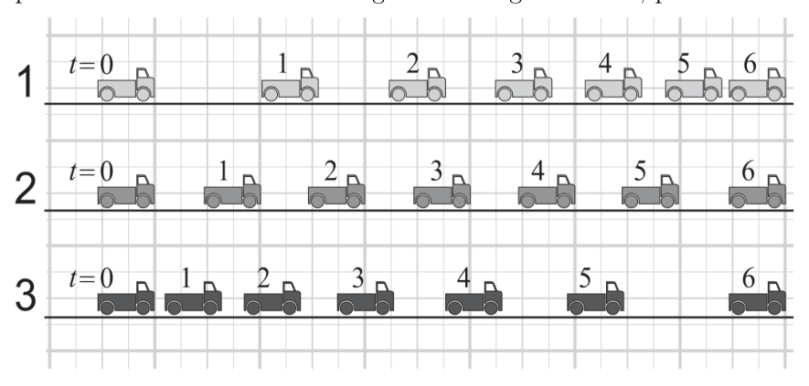
Posizioni dei tre furgoncini ogni secondoTopic: Newtonian Mechanics Metodi: Kinematic Equations Competenze: Physical Reasoning Objects: — Fonte: Testo (PDF) — p.1 Risposta: E · Soluzioni (PDF)
Three identical vans 1, 2 and 3 are each subject to a constant force, , and respectively; one or more of these forces may be zero. The figure shows the position of each of the three vans every second, for a total interval of 6 seconds.
Which truck has the highest average speed in this range?
- A. Number 1
- B. Number 2
- C. Number 3
- D. Numbers 1 and 3.
- E. All three have the same average speed.
The position of the three vans every second
Topic: Newtonian Mechanics Metodi: Kinematic Equations Competenze: Physical Reasoning Objects: — Fonte: Testo (PDF) — p.1 The Commission has also adopted a proposal for a regulation on the protection of the environment and the environment.
Con riferimento alla figura del quesito precedente, come si confrontano le intensità delle tre forze agenti sui furgoncini?
- A.
- B.
- C.
- D.
- E. Topic: Newtonian Mechanics Metodi: Kinematic Equations, Free-Body Diagram Competenze: Physical Reasoning Objects: — Fonte: Testo (PDF) — p.1 Risposta: B · Soluzioni (PDF)
In the light of the figure in the previous question, how do the intensities of the three forces acting on the vans compare?
- A.
- B.
- C.
- D.
- E. Topic: Newtonian Mechanics Metodi: Kinematic Equations, Free-Body Diagram Competenze: Physical Reasoning Objects: — Fonte: Testo (PDF) — p.1 The Commission has also adopted a proposal for a Regulation (EC) laying down the rules for the implementation of the common fisheries policy.
In figura sono mostrati una piccola lampada, che può essere considerata una sorgente puntiforme di luce, e un fotometro per misurare la potenza della radiazione incidente su una superficie posta a quella distanza. La potenza è espressa dal fotometro in unità arbitrarie.
Se il fotometro indica 4 unità quando è a 20 cm dalla lampada, che cosa si può fare affinché si leggano 64 unità?
- A. Spostare il fotometro a 80 cm.
- B. Spostare il fotometro a 40 cm.
- C. Spostare il fotometro a 10 cm.
- D. Spostare il fotometro a 5 cm.
- E. Usare una lampadina quattro volte più potente.
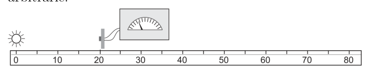
Lampada puntiforme e fotometro a distanza variabileTopic: Geometric Optics Metodi: Physical Modeling Competenze: Physical Reasoning, Mathematical Modeling Objects: — Fonte: Testo (PDF) — p.2 Risposta: D · Soluzioni (PDF)
A small lamp, which can be considered a pointed light source, and a photometer to measure the power of incident radiation on a surface at that distance are shown in the figure. The power is expressed by the photometer in arbitrary units.
If the photometer indicates 4 units when it is 20 centimeters from the lamp, what can be done to make 64 units?
- A. Move the photometer to 80 cm.
- B. Move the photometer to 40 cm.
- C. Move the photometer to 10 cm.
- D. Move the photometer to 5 cm.
- Use a bulb four times as powerful.
Spot lamp and variable distance photometer
Topic: Geometric Optics Metodi: Physical Modeling Competenze: Physical Reasoning, Mathematical Modeling Objects: — Fonte: Testo (PDF) — p.2 The Commission has also adopted a proposal for a Regulation (EC) laying down the rules for the implementation of the common fisheries policy.
In figura è rappresentato il grafico accelerazione-tempo di un corpo che si muove di moto rettilineo. Calcolando l’area evidenziata nel grafico, quale grandezza si ottiene?
- A. La distanza percorsa tra e
- B. L’accelerazione media tra e
- C. La velocità media tra e
- D. La velocità al tempo
- E. L’impulso per unità di massa dato al corpo tra e Topic: Newtonian Mechanics Metodi: Kinematic Equations, Calculus-Integration Competenze: Diagrammatic Reasoning, Physical Reasoning Objects: — Fonte: Testo (PDF) — p.2 Risposta: E · Soluzioni (PDF)
The graph shows the acceleration-time of a body moving in a straight linear motion. Calculating the area highlighted in the graph, what size do you get?
- A. The distance travelled between and
- B. The average acceleration between and
- C. The average speed between and
- D. The speed at time
- E. The pulse per unit mass given to the body between and Topic: Newtonian Mechanics Metodi: Kinematic Equations, Calculus-Integration Competenze: Diagrammatic Reasoning, Physical Reasoning Objects: — Fonte: Testo (PDF) — p.2 The Commission has also adopted a proposal for a regulation on the protection of the environment and the environment.
La luce di un laser incide perpendicolarmente su due fenditure parallele realizzate su una lastra opaca. Su uno schermo, posto dietro la lastra con le fenditure e parallelo a questa, si formano delle frange di interferenza.
La separazione delle frange può essere aumentata…
- aumentando la lunghezza d’onda della luce.
- aumentando la distanza tra fenditure e schermo.
- aumentando la distanza tra le fenditure.
Quali delle affermazioni date sopra sono corrette?
- A. Solo 1
- B. Solo 1 e 2
- C. Solo 1 e 3
- D. Solo 2 e 3
- E. 1, 2 e 3 Topic: Wave Optics Metodi: Interference & Diffraction Analysis, Superposition Principle Competenze: Physical Reasoning Objects: Slit, Screen Fonte: Testo (PDF) — p.2 Risposta: B · Soluzioni (PDF)
The light of a laser is perpendicular to two parallel slits made on a opaque sheet. On a screen, placed behind the plate with the cracks and parallel to it, interference fringes form.
The separation of the franges can be increased…
- It increases the wavelength of light.
- increasing the distance between the cracks and the screen.
- increasing the distance between the cracks.
Which of the above statements is correct?
- **A ** Only 1
- B. Only 1 and 2
- C. Only 1 and 3
- D. Only 2 and 3
- E. 1, 2 e 3 Topic: Wave Optics Metodi: Interference & Diffraction Analysis, Superposition Principle Competenze: Physical Reasoning Objects: Slit, Screen Fonte: Testo (PDF) — p.2 The Commission has also adopted a proposal for a Regulation (EC) laying down the rules for the implementation of the common fisheries policy.
La figura rappresenta schematicamente una successione di tre decadimenti radioattivi in cui un nucleo P forma un nucleo Q che a sua volta decade formando un nucleo R e infine un nucleo S.
Quale delle alternative fornisce i valori corretti rispettivamente per la variazione del numero di massa e quella del numero atomico tra P e S?
- A.
- B.
- C.
- D.
- E.
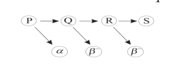
Schema decadimenti radioattivi P→Q→R→STopic: Nuclear & Particle Physics Metodi: Radioactive Decay Law Competenze: Physical Reasoning, Diagrammatic Reasoning Objects: Nucleus Fonte: Testo (PDF) — p.3 Risposta: E · Soluzioni (PDF)
The figure diagrammatically represents a succession of three radioactive decays in which a nucleus P forms a nucleus Q which in turn decays forming a nucleus R and finally a nucleus S.
Which of the alternatives provides the correct values for the variation of the mass number and the atomic number between P and S respectively?
- A.
- B.
- C.
- D.
- E.
The following information is provided by the manufacturer:
Topic: Nuclear & Particle Physics Metodi: Radioactive Decay Law Competenze: Physical Reasoning, Diagrammatic Reasoning Objects: Nucleus Fonte: Testo (PDF) — p.3 The Commission has also adopted a proposal for a regulation on the protection of the environment and the environment.
Un condensatore è collegato in serie ad un resistore variabile, ad un amperometro molto sensibile, ad un interruttore e ad una batteria come mostrato in figura. Alla chiusura dell’interruttore, si varia progressivamente la resistenza in modo tale da garantire che il condensatore abbia una corrente di carica costante di A per un tempo di 30 s. In questo intervallo di tempo la differenza di potenziale tra le piastre del condensatore sale da 0 V a 12 V.
Qual è la capacità del condensatore?
- A. 4 F
- B. F
- C. F
- D. F
- E. F
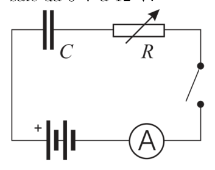
Circuito RC con resistore variabile e amperometroTopic: Circuits Metodi: Kirchhoff’s Laws, Equivalent Circuit Reduction Competenze: Mathematical Modeling, Physical Reasoning Objects: Capacitor, Resistor, Switch, Battery Fonte: Testo (PDF) — p.3 Risposta: C · Soluzioni (PDF)
A capacitor is serial-linked to a variable resistor, a highly sensitive amperometer, a switch and a battery as shown in the figure. When the switch is closed, the resistance is progressively changed to ensure that the capacitor has a constant current of A for a period of 30 seconds. During this time the difference in capacitor power between the capacitor plates increases from 0 V to 12 V.
What’s the capacitance of the capacitor?
- A. 4 F
- B. F
- C. F
- D. F
- E. F
RC circuit with variable resistance and ampere
Topic: Circuits Metodi: Kirchhoff’s Laws, Equivalent Circuit Reduction Competenze: Mathematical Modeling, Physical Reasoning Objects: Capacitor, Resistor, Switch, Battery Fonte: Testo (PDF) — p.3 The Commission has also adopted a proposal for a Regulation (EC) laying down the rules for the implementation of the Community’s common fisheries policy.
Cinque studenti vogliono verificare la legge di Snell della rifrazione () secondo cui la luce subisce un cambiamento di direzione mentre si propaga da un mezzo ad un altro; e sono gli angoli che danno la direzione della luce prima e dopo la rifrazione; ogni studente utilizza uno degli oggetti di vetro mostrati in figura e misura gli angoli indicati, al variare della direzione del raggio incidente.
Quale studente potrà effettivamente verificare la legge della rifrazione?
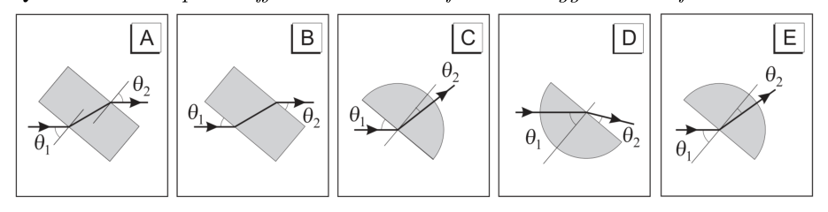
Cinque oggetti di vetro per verifica legge di SnellTopic: Geometric Optics Metodi: Snell’s Law, Ray Tracing Competenze: Physical Reasoning, Diagrammatic Reasoning Objects: Prism Fonte: Testo (PDF) — p.3 Risposta: E · Soluzioni (PDF)
Five students want to verify Snell’s law of refraction () according to which light undergoes a change of direction as it propagates from one medium to another; and are the angles that give the direction of light before and after refraction; each student uses one of the glass objects shown in the figure and measures the angles indicated, as the direction of the incident beam varies.
Which student will actually be able to verify the law of refraction?
Five glass objects for Snell law verification
Topic: Geometric Optics Metodi: Snell’s Law, Ray Tracing Competenze: Physical Reasoning, Diagrammatic Reasoning Objects: Prism Fonte: Testo (PDF) — p.3 The Commission has also adopted a proposal for a regulation on the protection of the environment and the environment.
Qual è, approssimativamente, il volume di un normale foglio di carta formato A4?
- A.
- B.
- C.
- D.
- E. Topic: Order-of-Magnitude Estimation Metodi: Order-of-Magnitude Estimation, Dimensional Analysis Competenze: Estimation & Approximation Objects: — Fonte: Testo (PDF) — p.4 Risposta: E · Soluzioni (PDF)
What is the volume of a normal A4 sheet of paper?
- A.
- B.
- C.
- D.
- E. Topic: Order-of-Magnitude Estimation Metodi: Order-of-Magnitude Estimation, Dimensional Analysis Competenze: Estimation & Approximation Objects: — Fonte: Testo (PDF) — p.4 The Commission has also adopted a number of proposals for the implementation of the ‘European Union’s strategy for the protection of the environment.
Quale dei seguenti grafici mostra la relazione tra il volume e la temperatura, a pressione costante, per una data quantità di gas perfetto?
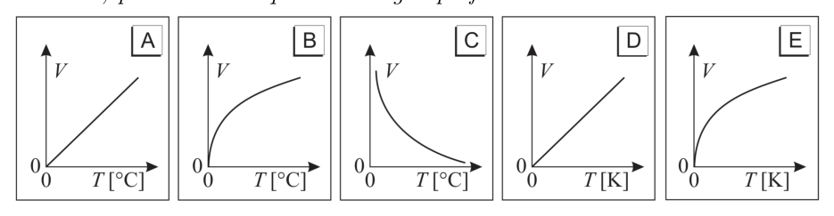
Cinque grafici volume-temperatura a pressione costanteTopic: Thermodynamics Metodi: Ideal Gas Law Competenze: Diagrammatic Reasoning, Physical Reasoning Objects: Gas Fonte: Testo (PDF) — p.4 Risposta: D · Soluzioni (PDF)
Which of the following graphs shows the relationship between volume and temperature at constant pressure for a given amount of perfect gas?
The following table shows the values of the values of the values of the values of the values of the values of the values of the values of the values of the values of the values of the values of the values of the values of the values of the values of the values of the values of the values of the values of the values of the values of the values of the values of the values of the values of the values of the values of the values of the values of the values of the values of the values of the values of the values of the values of the values of the values of the values of the values of the values of the values of the values of the values of the values of the values of the values of the values of the values of the values of the values of the values of the values of the values of the values of the values of the values of the values of the values of the values of the values of the values of the values of the values of the values of the values of the values of the values of the values of the values of the values of the values of the values of the values of the values of the values of the values of the values of the values of the values of the values of the values of the values of the values of the values of the values of the values of the values of the values of the values of the values of the values of the values of the values of the values of the values of the values of the values of the first sub-thesex.
Topic: Thermodynamics Metodi: Ideal Gas Law Competenze: Diagrammatic Reasoning, Physical Reasoning Objects: Gas Fonte: Testo (PDF) — p.4 The Commission has also adopted a proposal for a Regulation (EC) laying down the rules for the implementation of the common fisheries policy.
Un generatore di tensione con una f.e.m. di 20 V è connesso a quattro resistori in serie come mostrato in figura. Un voltmetro ideale può essere connesso a due qualunque tra i punti K, L, M, N e O, in modo da ottenere diversi valori della differenza di potenziale.
Tra quali punti occorre connettere il Voltmetro per avere una differenza di potenziale di 8 V?
- A. L e N
- B. M e O
- C. K e L
- D. K e N
- E. L e O Topic: Circuits Metodi: Kirchhoff’s Laws, Equivalent Circuit Reduction Competenze: Mathematical Modeling, Physical Reasoning Objects: Battery, Resistor Fonte: Testo (PDF) — p.4 Risposta: B · Soluzioni (PDF)
A voltage generator with an f.e.m. The 20 V is connected to four series resistors as shown in Figure 1. An ideal voltmeter can be connected to two points K, L, M, N and O, so as to obtain different values of the potential difference.
What points do the Voltmeter need to be connected to to have an 8 V potential difference?
- A. L e N
- B. M e O
- C. K e L
- D. K e N
- E. L e O Topic: Circuits Metodi: Kirchhoff’s Laws, Equivalent Circuit Reduction Competenze: Mathematical Modeling, Physical Reasoning Objects: Battery, Resistor Fonte: Testo (PDF) — p.4 The Commission has also adopted a number of proposals for the implementation of the ‘European Union’s strategy for the prevention of trafficking in human beings’.
Nella figura viene rappresentata una semplice dimostrazione dell’effetto fotoelettrico. Una sorgente monocromatica viene accesa e diretta su una lastra di zinco elettricamente carica, montata su un elettroscopio.
Quali dei seguenti fattori possono essere decisivi per stabilire se la lastra si scaricherà o no?
- La luminosità della sorgente.
- La lunghezza d’onda della luce utilizzata.
- Il tipo di carica (positiva o negativa) sulla lastra.
- A. Solo 2
- B. Solo 3
- C. 1 e 2
- D. 2 e 3
- E. 1, 2 e 3
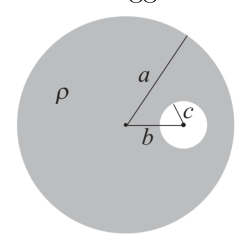
Dimostrazione effetto fotoelettrico su lastra di zincoTopic: Modern-Quantum Physics Metodi: Photon Energy Relation Competenze: Physical Reasoning Objects: Photon Fonte: Testo (PDF) — p.4 Risposta: D · Soluzioni (PDF)
A simple demonstration of the photoelectric effect is shown in the figure. A monochrome source is lit and directed onto an electrically charged zinc plate, mounted on an electroscope.
Which of the following factors may be decisive in determining whether the plate will be discharged or not?
- The brightness of the source.
- The wavelength of the light used.
- Type of charge (positive or negative) on the plate.
- **A ** Only two
- ** B ** Only 3
- C. 1 e 2
- D. 2 e 3
- E. 1, 2 e 3
The following table shows the results of the test:
Topic: Modern-Quantum Physics Metodi: Photon Energy Relation Competenze: Physical Reasoning Objects: Photon Fonte: Testo (PDF) — p.4 The Commission has also adopted a proposal for a Regulation (EC) laying down the rules for the implementation of the common fisheries policy.
Una sferetta di plastilina di massa viene lanciata a velocità contro l’estremità inferiore di un’asta rigida appesa e libera di ruotare attorno alla sua estremità superiore. L’asta ha una massa trascurabile rispetto alla sferetta, è lunga e, come mostrato in figura, alla sua estremità inferiore è fissata una seconda sferetta di massa . Nell’urto le due sferette restano attaccate.
Qual è la velocità tangenziale delle due sferette attaccate, subito dopo la collisione?
- A.
- B.
- C.
- D.
- E. Topic: Rotational Dynamics Metodi: Conservation of Momentum, Torque & Angular Momentum Analysis Competenze: Mathematical Modeling, Physical Reasoning Objects: Rod, Ball Fonte: Testo (PDF) — p.5 Risposta: A · Soluzioni (PDF)
A ball of plasticine of mass is thrown at speed against the lower end of a rigid axle suspended and free to rotate around its upper end. The axle has a negligible mass relative to the sphere, is long and, as shown in the figure, a second sphere of mass is fixed at its lower end. In the impact, the two spheres remain attached.
What is the tangential velocity of the two attached spheres immediately after the collision?
- A.
- B.
- C.
- D.
- E. Topic: Rotational Dynamics Metodi: Conservation of Momentum, Torque & Angular Momentum Analysis Competenze: Mathematical Modeling, Physical Reasoning Objects: Rod, Ball Fonte: Testo (PDF) — p.5 The Commission has also adopted a proposal for a Regulation (EC) laying down the rules for the implementation of the common fisheries policy.
In una regione sferica di raggio vi è una distribuzione uniforme di carica di densità . All’interno della distribuzione è stata creata una cavità sferica schematizzata in figura, avente raggio e con il centro posto a distanza dal centro della sfera.
Determinare l’intensità del campo elettrico nel centro della cavità.
- A.
- B.
- C.
- D.
- E. Topic: Electrostatics Metodi: Gauss’s Law, Superposition Principle Competenze: Mathematical Modeling, Physical Reasoning Objects: Sphere Fonte: Testo (PDF) — p.5 Risposta: B · Soluzioni (PDF)
In a spherical region of radius there is a uniform charge distribution of density . Within the distribution a spherical cavity has been created, outlined in Figure, with radius and the centre at a distance from the centre of the sphere.
Determine the intensity of the electric field in the center of the cavity.
- A.
- B.
- C.
- D.
- E. Topic: Electrostatics Metodi: Gauss’s Law, Superposition Principle Competenze: Mathematical Modeling, Physical Reasoning Objects: Sphere Fonte: Testo (PDF) — p.5 The Commission has also adopted a number of proposals for the implementation of the ‘European Union’s strategy for the prevention of trafficking in human beings’.
Una sonda spaziale è in orbita circolare intorno a un pianeta; viene dato il comando di accendere per un breve intervallo di tempo un motore che emette un potente getto in direzione del centro del pianeta, cosicché il modulo della velocità aumenta del 2%.
Al termine della manovra, quale delle seguenti affermazioni è corretta in riferimento alla traiettoria seguita successivamente dalla sonda?
- A. È un’ellisse
- B. È un’iperbole
- C. È una circonferenza di raggio maggiore
- D. È una spirale di raggio crescente
- E. È caratterizzata da molte oscillazioni radiali durante una rivoluzione intorno al pianeta Topic: Gravitation Metodi: Kepler’s Laws, Conservation of Energy Competenze: Physical Reasoning Objects: Satellite, Planet Fonte: Testo (PDF) — p.6 Risposta: A · Soluzioni (PDF)
A spacecraft is in a circular orbit around a planet; it is given the command to start for a short time an engine that emits a powerful jet in the direction of the center of the planet, so that the speed module increases by 2%.
At the end of the manoeuvre, which of the following statements is correct in relation to the trajectory followed by the probe?
- A It is an ellipse
- B. It is a hyperbole
- C. It is a greater radius circumference
- D. It is a spiral of increasing radius
- E. It is characterized by many radial oscillations during a revolution around the planet Topic: Gravitation Metodi: Kepler’s Laws, Conservation of Energy Competenze: Physical Reasoning Objects: Satellite, Planet Fonte: Testo (PDF) — p.6 The Commission has also adopted a proposal for a Regulation (EC) laying down the rules for the implementation of the common fisheries policy.
Un camion del peso di N percorre 1.6 km su una strada in salita, superando un dislivello di 80 m dal livello di partenza.
Se il camion, viaggiando a velocità costante, impiega 3 minuti, qual è il minimo valore della potenza media utilizzata?
- A. 67 W
- B. 1.3 kW
- C. 67 kW
- D. 1.3 MW
- E. 4 MW Topic: Newtonian Mechanics Metodi: Conservation of Energy, Free-Body Diagram Competenze: Mathematical Modeling, Physical Reasoning Objects: — Fonte: Testo (PDF) — p.6 Risposta: C · Soluzioni (PDF)
A truck weighing N shall travel 1.6 km on a rolling road, exceeding a displacement of 80 m from the starting level.
If the truck, travelling at constant speed, takes 3 minutes, what is the minimum value of the average power used?
- A. 67 W
- B. 1.3 kW
- C. 67 kW
- D. 1.3 MW
- E. 4 MW Topic: Newtonian Mechanics Metodi: Conservation of Energy, Free-Body Diagram Competenze: Mathematical Modeling, Physical Reasoning Objects: — Fonte: Testo (PDF) — p.6 The Commission has also adopted a proposal for a Regulation (EC) on the common organisation of the market in milk and milk products.
Il conduttore termico ST mostrato in figura è isolato termicamente lungo la sua superficie laterale e gli estremi S e T sono mantenuti a temperature diverse; al suo interno il conduttore è interrotto da uno strato XY di un materiale diverso.
In condizioni stazionarie, la differenza di temperatura tra gli estremi dello strato XY dipende…
- dalla differenza di temperatura tra gli estremi ST del conduttore.
- dallo spessore dello strato XY.
- dalla posizione di XY lungo ST.
Quali delle precedenti affermazioni sono corrette?
- A. Nessuna delle tre.
- B. Solo la 1 e la 2.
- C. Solo la 2 e la 3.
- D. Solo la 1.
- E. Solo la 3.
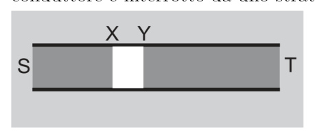
Conduttore termico ST con strato XY interpostoTopic: Thermodynamics Metodi: Physical Modeling, First Law of Thermodynamics Competenze: Physical Reasoning Objects: Rod Fonte: Testo (PDF) — p.6 Risposta: B · Soluzioni (PDF)
The ST thermal conductor shown in the figure is thermal insulated along its side surface and the S and T extremes are kept at different temperatures; inside the conductor is interrupted by an XY layer of a different material.
Under stationary conditions, the temperature difference between the extremes of the XY layer depends on…
- the temperature difference between the ST extremes of the conductor.
- the thickness of the XY layer.
- from the position of XY along ST.
Which of the above statements is correct?
- **A ** None of the three.
- B. Only the 1 and 2.
- C. Only the 2 and 3.
- D. Only the 1.
- E Only the 3.
The heat conductor ST with intersecting layer XY *
Topic: Thermodynamics Metodi: Physical Modeling, First Law of Thermodynamics Competenze: Physical Reasoning Objects: Rod Fonte: Testo (PDF) — p.6 The Commission has also adopted a number of proposals for the implementation of the ‘European Union’s strategy for the prevention of trafficking in human beings’.
Due cariche puntiformi e , ciascuna di C, stanno alla distanza di 1 m.
Quale, tra le combinazioni di cariche, alla distanza indicata, determina una forza elettrostatica uguale in modulo a quella tra e ?
| A | 2 | 2 | 0.4 |
| B | 6 | 4 | 0.8 |
| C | 8 | 2 | 1.6 |
| D | 8 | 4 | 2.4 |
| E | 16 | 4 | 2.0 |
Topic: Electrostatics Metodi: Coulomb’s Law Competenze: Mathematical Modeling, Physical Reasoning Objects: Point Charge Fonte: Testo (PDF) — p.7 Risposta: E · Soluzioni (PDF)
Two point loadings and , each of C, are at a distance of 1 m.
Which of the charge combinations, at the distance indicated, determines an electrostatic force equal in form to that between and ?
| A | 2 | 2 | 0.4 |
| B | 6 | 4 | 0.8 |
| C | 8 | 2 | 1.6 |
| D | 8 | 4 | 2.4 |
| E | 16 | 4 | 2.0 |
Topic: Electrostatics Metodi: Coulomb’s Law Competenze: Mathematical Modeling, Physical Reasoning Objects: Point Charge Fonte: Testo (PDF) — p.7 The Commission has also adopted a number of proposals for the implementation of the ‘European Union’s strategy for the protection of the environment.
L’Hertz è un’unità di misura della frequenza.
Questa unità, nel caso particolare della propagazione di un’onda periodica, esprime il numero di
- A. secondi necessari a completare un ciclo dell’onda.
- B. cicli che l’onda completa in un secondo.
- C. punti in fase nello spazio di un metro, nella direzione di propagazione dell’onda.
- D. punti in controfase nello spazio di un metro, nella direzione di propagazione dell’onda.
- E. metri di distanza fra due creste consecutive dell’onda. Topic: Oscillations & Waves Metodi: Wave Equation Competenze: Physical Reasoning Objects: — Fonte: Testo (PDF) — p.7 Risposta: B · Soluzioni (PDF)
The Hertz is a unit of frequency measurement.
This unit, in the particular case of the propagation of a periodic wave, expresses the number of
- A. seconds needed to complete a wave cycle.
- B. cycles completing the wave in one second.
- C. phase points in a metre space, in the direction of wave propagation.
- **D ** points in a one-meter space in the direction of wave propagation.
- **E ** metres distance between two consecutive waves. Topic: Oscillations & Waves Metodi: Wave Equation Competenze: Physical Reasoning Objects: — Fonte: Testo (PDF) — p.7 The Commission has also adopted a number of proposals for the implementation of the ‘European Union’s strategy for the prevention of trafficking in human beings’.
Il grafico in figura mostra la relazione tra l’allungamento di una molla e il modulo della forza ad essa applicata.
Quanto vale la costante elastica della molla?
- A.
- B.
- C.
- D.
- E.
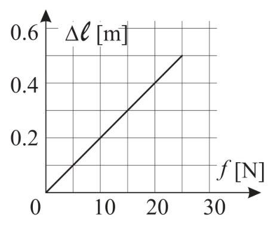
Grafico allungamento-forza di una mollaTopic: Oscillations & Waves Metodi: Hooke’s Law, Graph Linearization Competenze: Diagrammatic Reasoning, Mathematical Modeling Objects: Spring Fonte: Testo (PDF) — p.7 Risposta: D · Soluzioni (PDF)
The graph in this figure shows the relationship between the lengthening of a spring and the form of force applied to it.
How much is the spring’s elastic constant worth?
- A.
- B.
- C.
- D.
- E.
Graph of the force-stretch of a spring
Topic: Oscillations & Waves Metodi: Hooke’s Law, Graph Linearization Competenze: Diagrammatic Reasoning, Mathematical Modeling Objects: Spring Fonte: Testo (PDF) — p.7 The Commission has also adopted a proposal for a Regulation (EC) laying down the rules for the implementation of the common fisheries policy.
Due liquidi non miscibili sono posti in equilibrio in un recipiente, come in figura.
Quale grafico rappresenta meglio la pressione nel recipiente in funzione della profondità se è la pressione atmosferica?
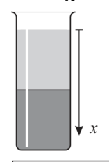
Due liquidi immiscibili in recipiente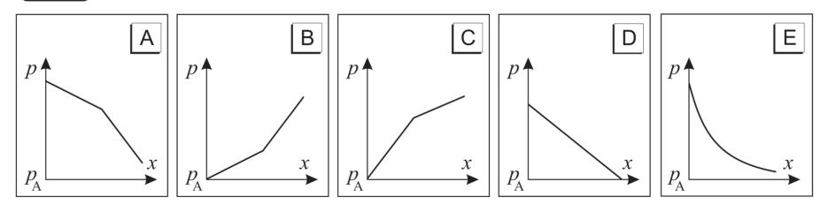
Cinque grafici pressione-profondità candidatiTopic: Fluid Mechanics Metodi: Hydrostatic Equilibrium Competenze: Diagrammatic Reasoning, Physical Reasoning Objects: Container Fonte: Testo (PDF) — p.8 Risposta: B · Soluzioni (PDF)
Two non-mixable liquids are balanced in a container, as shown in the figure.
Which graph best represents the pressure in the container at depth if is atmospheric pressure?
Two liquids to be mixed into a container
The following table shows the results of the tests:
Topic: Fluid Mechanics Metodi: Hydrostatic Equilibrium Competenze: Diagrammatic Reasoning, Physical Reasoning Objects: Container Fonte: Testo (PDF) — p.8 The Commission has also adopted a number of proposals for the implementation of the ‘European Union’s strategy for the prevention of trafficking in human beings’.
Una palla di 0.1 kg è lasciata cadere verticalmente da un’altezza di 1 m sul pavimento e, dopo il rimbalzo, risale fino a un’altezza di 0.8 m.
L’energia meccanica persa è
- A. 0.020 J
- B. 0.078 J
- C. 0.20 J
- D. 0.78 J
- E. 0.98 J Topic: Conservation of Energy Metodi: Energy Conservation Method Competenze: Mathematical Modeling, Physical Reasoning Objects: Ball Fonte: Testo (PDF) — p.8 Risposta: C · Soluzioni (PDF)
A 0.1 kg ball is dropped vertically from a height of 1 m on the floor and, after bouncing, rises to a height of 0.8 m.
The mechanical energy lost is
- A. 0.020 J
- B. 0.078 J
- C. 0.20 J
- D. 0.78 J
- E. 0.98 J Topic: Conservation of Energy Metodi: Energy Conservation Method Competenze: Mathematical Modeling, Physical Reasoning Objects: Ball Fonte: Testo (PDF) — p.8 The Commission has also adopted a proposal for a Regulation (EC) on the common organisation of the market in milk and milk products.
Cosa succede quando la luce passa dall’acqua all’aria?
- A. La sua velocità diminuisce, la sua lunghezza d’onda diminuisce e la sua frequenza rimane la stessa.
- B. La sua velocità diminuisce, la sua lunghezza d’onda diminuisce e la sua frequenza diminuisce.
- C. La sua velocità diminuisce, la sua lunghezza d’onda rimane la stessa e la sua frequenza diminuisce.
- D. La sua velocità aumenta, la sua lunghezza d’onda aumenta e la sua frequenza rimane la stessa.
- E. La sua velocità aumenta, la sua lunghezza d’onda rimane la stessa e la sua frequenza aumenta. Topic: Geometric Optics, Wave Optics Metodi: Snell’s Law Competenze: Physical Reasoning Objects: — Fonte: Testo (PDF) — p.9 Risposta: D · Soluzioni (PDF)
What happens when light passes from water to air?
- A. Its speed decreases, its wavelength decreases and its frequency remains the same.
- B. Its speed decreases, its wavelength decreases and its frequency decreases.
- C. Its speed decreases, its wavelength remains the same and its frequency decreases.
- D. Its speed increases, its wavelength increases and its frequency remains the same.
- E. Its speed increases, its wavelength remains the same and its frequency increases. Topic: Geometric Optics, Wave Optics Metodi: Snell’s Law Competenze: Physical Reasoning Objects: — Fonte: Testo (PDF) — p.9 The Commission has also adopted a proposal for a Regulation (EC) laying down the rules for the implementation of the common fisheries policy.
In figura è mostrato un blocco di massa tenuto fermo su un piano liscio (inclinato di rispetto all’orizzontale) e agganciato ad una molla a riposo, di costante elastica . Ad un certo istante il blocco viene lasciato libero di muoversi.
Qual è il massimo allungamento della molla?
- A.
- B.
- C.
- D.
- E.
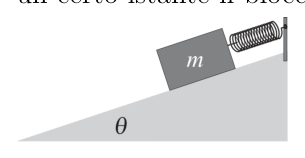
Blocco su piano inclinato agganciato a mollaTopic: Oscillations & Waves, Conservation of Energy Metodi: Hooke’s Law, Energy Conservation Method Competenze: Mathematical Modeling, Physical Reasoning Objects: Block, Inclined Plane, Spring Fonte: Testo (PDF) — p.9 Risposta: A · Soluzioni (PDF)
The figure shows a mass block held firmly on a smooth plane (inclined by relative to the horizontal) and attached to a resting spring of constant elasticity . At a certain moment the block is left free to move.
What is the maximum length of the spring ?
- A.
- B.
- C.
- D.
- E.
Lock on a sloping plane attached to a spring
Topic: Oscillations & Waves, Conservation of Energy Metodi: Hooke’s Law, Energy Conservation Method Competenze: Mathematical Modeling, Physical Reasoning Objects: Block, Inclined Plane, Spring Fonte: Testo (PDF) — p.9 The Commission has also adopted a proposal for a Regulation (EC) laying down the rules for the implementation of the common fisheries policy.
L’asta di una bandiera è omogenea, lunga e ha massa ; il momento d’inerzia dell’asta rispetto a un’estremità è .
L’asta è appoggiata in terra ad un angolo col piano orizzontale, mantenuta da un supporto. Se il supporto dell’asta si rompe, questa comincia a cadere ruotando attorno al punto O in figura.
Qual è l’accelerazione angolare dell’asta nell’istante iniziale della caduta?
- A.
- B.
- C.
- D.
- E. Topic: Rotational Dynamics Metodi: Torque & Angular Momentum Analysis, Free-Body Diagram Competenze: Mathematical Modeling, Physical Reasoning Objects: Rod Fonte: Testo (PDF) — p.9 Risposta: D · Soluzioni (PDF)
The flag’s aster is homogeneous, long and mass; the moment of inertia of the aster relative to an end is .
The axle shall be rested on the ground at an angle with the horizontal plane, supported by a support. If the axle support breaks, it begins to fall by rotating around the O point in the figure.
What is the angular acceleration of the lever at the initial instant of fall?
- A.
- B.
- C.
- D.
- E. Topic: Rotational Dynamics Metodi: Torque & Angular Momentum Analysis, Free-Body Diagram Competenze: Mathematical Modeling, Physical Reasoning Objects: Rod Fonte: Testo (PDF) — p.9 The Commission has also adopted a proposal for a Regulation (EC) laying down the rules for the implementation of the common fisheries policy.
Una certa quantità di gas perfetto è sottoposta ad un ciclo reversibile mostrato in figura, in cui la trasformazione BC è un’isoterma.
Il lavoro sviluppato dal gas in un ciclo ha un valore prossimo a
- A. 900 kJ
- B. 600 kJ
- C. 0
- D. −600 kJ
- E. −900 kJ
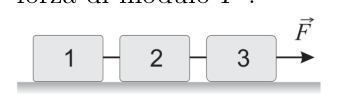
Ciclo termodinamico reversibile con isoterma BCTopic: Thermodynamics Metodi: Thermodynamic Cycle Analysis, First Law of Thermodynamics Competenze: Diagrammatic Reasoning, Mathematical Modeling Objects: Gas Fonte: Testo (PDF) — p.10 Risposta: B · Soluzioni (PDF)
A certain amount of perfect gas is subjected to a reversible cycle shown in the figure, in which the BC transformation is an isotherm.
The work developed by the gas in a cycle has a value close to
- A. 900 kJ
- B. 600 kJ
- C. 0
- D. −600 kJ
- E. −900 kJ
The heat output of the test chemical is measured in the following steps:
Topic: Thermodynamics Metodi: Thermodynamic Cycle Analysis, First Law of Thermodynamics Competenze: Diagrammatic Reasoning, Mathematical Modeling Objects: Gas Fonte: Testo (PDF) — p.10 The Commission has also adopted a number of proposals for the implementation of the ‘European Union’s strategy for the prevention of trafficking in human beings’.
Tre blocchi — numerati 1, 2 e 3 — sono appoggiati e in quiete su un piano orizzontale liscio come si vede nella figura. La massa di ciascun blocco è e i blocchi sono collegati da uno spago inestensibile di massa trascurabile. Si tira verso destra il blocco 3 con una forza di modulo .
La forza risultante sul blocco 2 è…
- A.
- B.
- C.
- D.
- E.
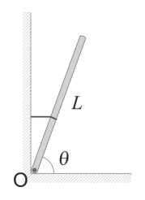
Tre blocchi collegati da spago su piano liscioTopic: Newtonian Mechanics Metodi: Free-Body Diagram, Newton’s Law of Gravitation Competenze: Mathematical Modeling, Physical Reasoning Objects: Block, String Fonte: Testo (PDF) — p.10 Risposta: B · Soluzioni (PDF)
Three blocks numbered 1, 2 and 3 are rested and rested on a smooth horizontal plane as seen in the figure. The mass of each block is and the blocks are connected by an extensive gap of negligible mass. Pull block 3 to the right with a force of form .
The resulting force on block 2 is…
- A.
- B.
- C.
- D.
- E.
Three blocks connected by smooth flat-bed slate
Topic: Newtonian Mechanics Metodi: Free-Body Diagram, Newton’s Law of Gravitation Competenze: Mathematical Modeling, Physical Reasoning Objects: Block, String Fonte: Testo (PDF) — p.10 The Commission has also adopted a number of proposals for the implementation of the ‘European Union’s strategy for the prevention of trafficking in human beings’.
Su un piano orizzontale si trovano cinque piccole bussole identiche A, B, C, D, E disposte con il quadrante orientato casualmente. Due fili perpendicolari al piano, percorsi da correnti identiche che scorrono nello stesso verso, lo attraversano nei punti indicati in figura. Gli effetti del campo magnetico terrestre e dei campi magnetici parassiti sono trascurabili.
Una delle bussole non sta funzionando perché l’ago è bloccato: qual è?
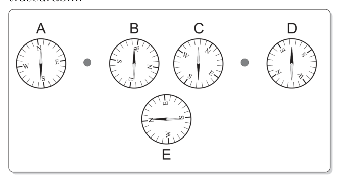
Cinque bussole attorno a due fili percorsi da correnteTopic: Magnetism Metodi: Biot-Savart Law, Superposition Principle Competenze: Diagrammatic Reasoning, Physical Reasoning Objects: Magnet, Wire Fonte: Testo (PDF) — p.11 Risposta: E · Soluzioni (PDF)
On a horizontal plane there are five identical small compasses A, B, C, D, and E arranged with the dial oriented randomly. Two wires perpendicular to the plane, traversed by identical currents flowing in the same direction, pass through it at the points indicated in the figure. The effects of the earth’s magnetic field and parasitic magnetic fields are negligible.
One of the compasses is not working because the needle is stuck.
Five compasses around two wires running on current
Topic: Magnetism Metodi: Biot-Savart Law, Superposition Principle Competenze: Diagrammatic Reasoning, Physical Reasoning Objects: Magnet, Wire Fonte: Testo (PDF) — p.11 The Commission has also adopted a number of proposals for the implementation of the ‘European Union’s strategy for the protection of the environment.
Una sorgente sonora, che emette un suono di frequenza pari a 1 kHz, si sta muovendo in direzione rettilinea verso un osservatore ad una velocità pari a 0.9 volte quella del suono.
La frequenza misurata dall’osservatore è
- A. 0.1 kHz
- B. 0.5 kHz
- C. 1.1 kHz
- D. 1.9 kHz
- E. 10 kHz Topic: Oscillations & Waves Metodi: Wave Equation Competenze: Mathematical Modeling, Physical Reasoning Objects: — Fonte: Testo (PDF) — p.11 Risposta: E · Soluzioni (PDF)
A sound source, which emits a sound of 1 kHz frequency, is moving in a straight line toward an observer at a speed 0.9 times that of sound.
The frequency measured by the observer is
- **A ** 0.1 kHz
- **B ** 0.5 kHz
- **C ** 1.1 kHz
- ** D ** 1.9 kHz
- **E ** 10 kHz Topic: Oscillations & Waves Metodi: Wave Equation Competenze: Mathematical Modeling, Physical Reasoning Objects: — Fonte: Testo (PDF) — p.11 The Commission has also adopted a number of proposals for the implementation of the ‘European Union’s strategy for the protection of the environment.
In un cilindro di capacità , riempito di ossigeno, la pressione è Pa. La densità dell’ossigeno a temperatura ambiente, alla pressione atmosferica di Pa, è di .
Assumendo che l’ossigeno nel cilindro sia a temperatura ambiente, qual è la sua densità?
- A.
- B.
- C.
- D.
- E. Topic: Kinetic Theory, Thermodynamics Metodi: Ideal Gas Law Competenze: Mathematical Modeling, Physical Reasoning Objects: Cylinder, Gas Fonte: Testo (PDF) — p.11 Risposta: D · Soluzioni (PDF)
In a cylinder of capacity filled with oxygen, the pressure is Pa. The oxygen density at room temperature, at atmospheric pressure of Pa, is .
Assuming the oxygen in the cylinder is at room temperature, what is its density?
- A.
- B.
- C.
- D.
- E. Topic: Kinetic Theory, Thermodynamics Metodi: Ideal Gas Law Competenze: Mathematical Modeling, Physical Reasoning Objects: Cylinder, Gas Fonte: Testo (PDF) — p.11 The Commission has also adopted a proposal for a Regulation (EC) laying down the rules for the implementation of the common fisheries policy.
Due forze di 30 N agiscono sullo stesso oggetto in direzioni diverse.
In quale diagramma la forza risultante è di 30 N?
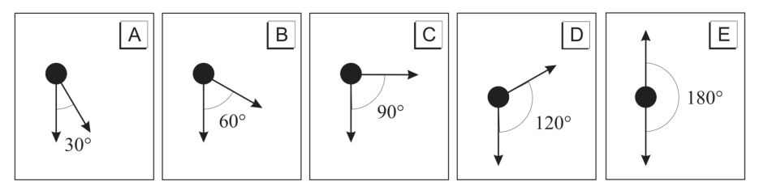
Cinque diagrammi di forza per trovare risultante 30 NTopic: Newtonian Mechanics Metodi: Vector Decomposition, Free-Body Diagram Competenze: Diagrammatic Reasoning, Physical Reasoning Objects: — Fonte: Testo (PDF) — p.11 Risposta: D · Soluzioni (PDF)
Two forces of 30 N act on the same object in different directions.
In which diagram is the resulting force 30 N?
Five force diagrams to find the resulting 30 N
Topic: Newtonian Mechanics Metodi: Vector Decomposition, Free-Body Diagram Competenze: Diagrammatic Reasoning, Physical Reasoning Objects: — Fonte: Testo (PDF) — p.11 The Commission has also adopted a proposal for a Regulation (EC) laying down the rules for the implementation of the common fisheries policy.
In figura è rappresentata una lente convergente sottile, in posizione . I fuochi si trovano nelle posizioni e .
Dove deve essere posizionato un oggetto per produrre a destra della lente un’immagine ingrandita, reale e capovolta?
- A.
- B.
- C.
- D.
- E.
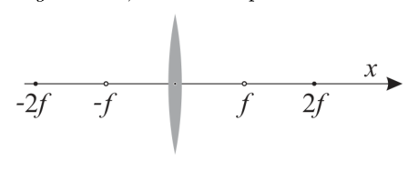
Lente convergente sottile con fuochi a ±fTopic: Geometric Optics Metodi: Thin Lens & Mirror Equation, Ray Tracing Competenze: Physical Reasoning, Diagrammatic Reasoning Objects: Lens Fonte: Testo (PDF) — p.12 Risposta: B · Soluzioni (PDF)
The image shows a thin convergent lens at the position . The fires are located in the positions and .
Where does an object need to be positioned to produce an enlarged, real, upside down image on the right side of the lens?
- A.
- B.
- C.
- D.
- E.
The following table shows the results of the calculation of the total value of the input:
Topic: Geometric Optics Metodi: Thin Lens & Mirror Equation, Ray Tracing Competenze: Physical Reasoning, Diagrammatic Reasoning Objects: Lens Fonte: Testo (PDF) — p.12 The Commission has also adopted a number of proposals for the implementation of the ‘European Union’s strategy for the prevention of trafficking in human beings’.
Una batteria da 9 V è collegata a quattro resistori in modo da formare il circuito in figura.
Qual è la corrente nel punto T del circuito?
- A. 2 A
- B. 4 A
- C. 5 A
- D. 7 A
- E. 9 A
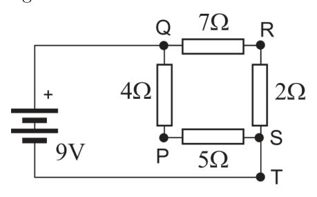
Circuito con batteria 9 V e quattro resistoriTopic: Circuits Metodi: Kirchhoff’s Laws, Equivalent Circuit Reduction Competenze: Mathematical Modeling, Physical Reasoning Objects: Battery, Resistor Fonte: Testo (PDF) — p.12 Risposta: A · Soluzioni (PDF)
A 9 V battery is connected to four resistors to form the circuit in the figure.
What’s the current at the T-point of the circuit?
- A. 2 A
- B. 4 A
- C. 5 A
- D. 7 A
- E. 9 A
Circuit with 9 V battery and four resistors
Topic: Circuits Metodi: Kirchhoff’s Laws, Equivalent Circuit Reduction Competenze: Mathematical Modeling, Physical Reasoning Objects: Battery, Resistor Fonte: Testo (PDF) — p.12 The Commission has also adopted a proposal for a Regulation (EC) laying down the rules for the implementation of the common fisheries policy.
Una pietra è lanciata verticalmente verso l’alto con velocità iniziale . Si assuma che la forza di attrito sia proporzionale a , dove è la velocità della pietra, e si trascuri la spinta di Archimede esercitata dall’aria.
Quale delle seguenti affermazioni è corretta?
- A. L’accelerazione della pietra è sempre uguale a .
- B. L’accelerazione della pietra è uguale a solo nel punto più alto della traiettoria.
- C. Il modulo dell’accelerazione della pietra è sempre minore di .
- D. Il modulo della velocità della pietra, quando è tornata nel punto di partenza, è uguale a .
- E. La pietra può raggiungere una velocità massima il cui modulo è maggiore di , prima di tornare al suo punto di partenza.
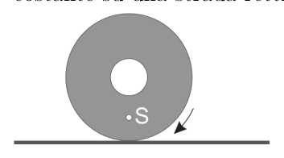
Pietra lanciata verticalmente con attrito viscosoTopic: Newtonian Mechanics Metodi: Free-Body Diagram, Differential Equations Competenze: Physical Reasoning Objects: Projectile Fonte: Testo (PDF) — p.13 Risposta: B · Soluzioni (PDF)
A stone is thrown vertically upwards with initial speed . The friction force is assumed to be proportional to , where is the stone velocity, and the air-impelled Archimedes thrust is ignored.
Which of the following is correct?
- A. The acceleration of the stone is always equal to .
- B. The acceleration of the stone is equal to only at the highest point of the trajectory.
- C. The acceleration mode of the stone is always less than .
- D. The stone’s speed module, when it has returned to the starting point, is .
- E. The stone can reach a maximum speed of more than before returning to its starting point.
Stone cast vertically with viscous friction
Topic: Newtonian Mechanics Metodi: Free-Body Diagram, Differential Equations Competenze: Physical Reasoning Objects: Projectile Fonte: Testo (PDF) — p.13 The Commission has also adopted a number of proposals for the implementation of the ‘European Union’s strategy for the prevention of trafficking in human beings’.
Se per spostare una carica di 3 C da un punto A a un punto B la forza del campo elettrostatico compie un lavoro di 15 J, la differenza di potenziale è
- A. 45 V
- B. 23 V
- C. 15 V
- D. 5 V
- E. 3 V Topic: Electrostatics Metodi: Electric Potential Method Competenze: Mathematical Modeling, Physical Reasoning Objects: Point Charge Fonte: Testo (PDF) — p.13 Risposta: D · Soluzioni (PDF)
If to move a charge of 3 C from point A to point B the force of the electrostatic field performs a work of 15 J, the potential difference is
- A. 45 V
- B. 23 V
- C. 15 V
- D. 5 V
- E. 3 V Topic: Electrostatics Metodi: Electric Potential Method Competenze: Mathematical Modeling, Physical Reasoning Objects: Point Charge Fonte: Testo (PDF) — p.13 The Commission has also adopted a proposal for a Regulation (EC) laying down the rules for the implementation of the common fisheries policy.
La velocità quadratica media dell’ossigeno molecolare, a temperatura ambiente, è ; la massa molecolare dell’ossigeno è 32 u.
Qual è la velocità quadratica media dell’elio, avente massa atomica 4 u, alla stessa temperatura?
- A.
- B.
- C.
- D.
- E. Topic: Kinetic Theory Metodi: Kinetic Theory of Gases, Statistical Averaging Competenze: Mathematical Modeling, Physical Reasoning Objects: Gas Fonte: Testo (PDF) — p.13 Risposta: B · Soluzioni (PDF)
The mean square velocity of molecular oxygen at room temperature is ; the molecular mass of oxygen is 32 u.
What is the average square velocity of helium, with atomic mass of 4 u, at the same temperature?
- A.
- B.
- C.
- D.
- E. Topic: Kinetic Theory Metodi: Kinetic Theory of Gases, Statistical Averaging Competenze: Mathematical Modeling, Physical Reasoning Objects: Gas Fonte: Testo (PDF) — p.13 The Commission has also adopted a number of proposals for the implementation of the ‘European Union’s strategy for the prevention of trafficking in human beings’.
Nella figura, il punto S si trova sulla ruota di un’auto che sta viaggiando a velocità costante su una strada rettilinea.
Quale, tra i grafici che seguono, rappresenta, in funzione del tempo, il modulo dell’accelerazione del punto S, nel sistema di riferimento della strada?
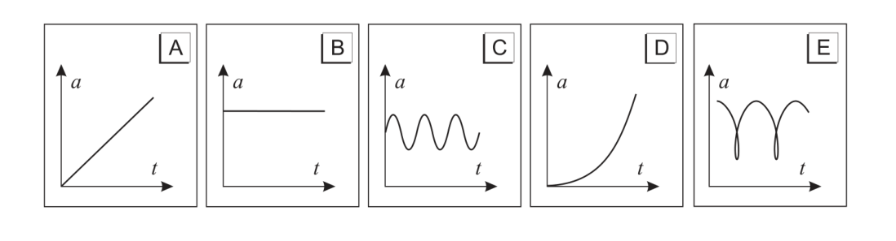
Cinque grafici accelerazione-tempo per punto su ruotaTopic: Newtonian Mechanics Metodi: Kinematic Equations, Vector Decomposition Competenze: Diagrammatic Reasoning, Physical Reasoning Objects: Wheel Fonte: Testo (PDF) — p.13 Risposta: B · Soluzioni (PDF)
In the figure, the S-spot is on the wheel of a car travelling at constant speed on a straight road.
Which of the following graphs shows the time-dependent acceleration pattern of the S-point in the road reference system?
Five time-acceleration graphs per point on the wheel
Topic: Newtonian Mechanics Metodi: Kinematic Equations, Vector Decomposition Competenze: Diagrammatic Reasoning, Physical Reasoning Objects: Wheel Fonte: Testo (PDF) — p.13 The Commission has also adopted a number of proposals for the implementation of the ‘European Union’s strategy for the prevention of trafficking in human beings’.
Un cubetto di piombo di massa si trova in un becher d’acqua a C. In un esperimento il becher con l’acqua e il cubetto di piombo vengono riscaldati finché l’acqua inizia a bollire (C).
La quantità d’energia accumulata dal cubetto di piombo durante l’esperimento è
- A. 0.31 kJ
- B. 10 kJ
- C. 60 kJ
- D. 80 kJ
- E. 790 kJ
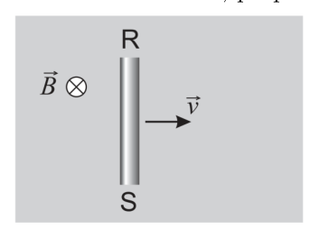
Filo RS in moto in campo magnetico uniforme
Topic: Thermodynamics Metodi: First Law of Thermodynamics Competenze: Mathematical Modeling, Physical Reasoning Objects: Block, Container Fonte: Testo (PDF) — p.14 Risposta: A · Soluzioni (PDF)
A lead cube of mass is contained in a water tank at C. In one experiment the water beaker and the lead bucket are heated until the water starts to boil (C).
The amount of energy accumulated by the lead cube during the experiment is
- A. 0.31 kJ
- B. 10 kJ
- C. 60 kJ
- D. 80 kJ
- E. 790 kJ RS wire in motion in uniform magnetic field
Topic: Thermodynamics Metodi: First Law of Thermodynamics Competenze: Mathematical Modeling, Physical Reasoning Objects: Block, Container Fonte: Testo (PDF) — p.14 The Commission has also adopted a proposal for a Regulation (EC) laying down the rules for the implementation of the common fisheries policy.
Un blocco di 2 kg, lasciato libero da fermo, scivola giù per una rampa da un’altezza di 3 m e raggiunge il suolo con un’energia cinetica di 50 J.
Il lavoro fatto dalle forze di attrito è approssimativamente di
- A. −6 J
- B. −9 J
- C. −18 J
- D. −44 J
- E. −50 J Topic: Conservation of Energy, Newtonian Mechanics Metodi: Energy Conservation Method, Free-Body Diagram Competenze: Mathematical Modeling, Physical Reasoning Objects: Block, Inclined Plane Fonte: Testo (PDF) — p.14 Risposta: B · Soluzioni (PDF)
A 2 kg block, left unturned, slides down a ramp from a height of 3 m and reaches the ground with a kinetic energy of 50 J.
The work done by the friction forces is approximately
- A. −6 J
- B. −9 J
- C. −18 J
- D. −44 J
- E. −50 J Topic: Conservation of Energy, Newtonian Mechanics Metodi: Energy Conservation Method, Free-Body Diagram Competenze: Mathematical Modeling, Physical Reasoning Objects: Block, Inclined Plane Fonte: Testo (PDF) — p.14 The Commission has also adopted a number of proposals for the implementation of the ‘European Union’s strategy for the prevention of trafficking in human beings’.
Un filo conduttore rigido RS, lungo 0.2 m, si muove in un campo magnetico uniforme di modulo T, perpendicolare al foglio ed entrante in esso, come in figura.
Se il filo RS si muove verso destra con una velocità costante di modulo , la differenza di potenziale indotta tra gli estremi del filo vale
- A. 0.12 V
- B. 0.48 V
- C. 2.4 V
- D. 4.8 V
- E. 12 V Topic: Electromagnetic Induction Metodi: Faraday’s Law of Induction, Lorentz Force Analysis Competenze: Mathematical Modeling, Physical Reasoning Objects: Wire Fonte: Testo (PDF) — p.14 Risposta: B · Soluzioni (PDF)
A rigid conductive wire RS, 0.2 m long, moves in a uniform magnetic field of T, perpendicular to and entering the sheet, as shown in Figure 1.
If the RS wire is moving to the right at a constant speed of , the difference in induced potential between the ends of the wire shall be
- A. 0.12 V
- B. 0.48 V
- C. 2.4 V
- D. 4.8 V
- E. 12 V Topic: Electromagnetic Induction Metodi: Faraday’s Law of Induction, Lorentz Force Analysis Competenze: Mathematical Modeling, Physical Reasoning Objects: Wire Fonte: Testo (PDF) — p.14 The Commission has also adopted a number of proposals for the implementation of the ‘European Union’s strategy for the prevention of trafficking in human beings’.